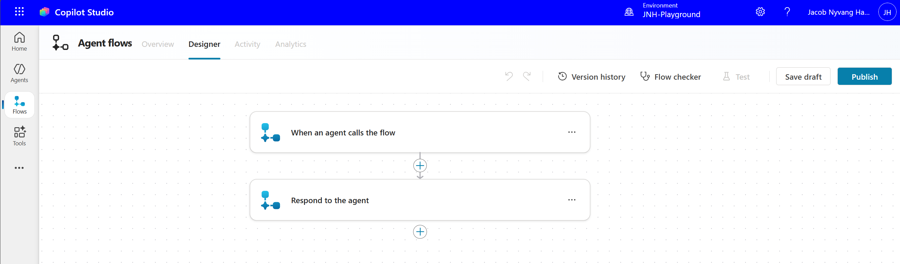
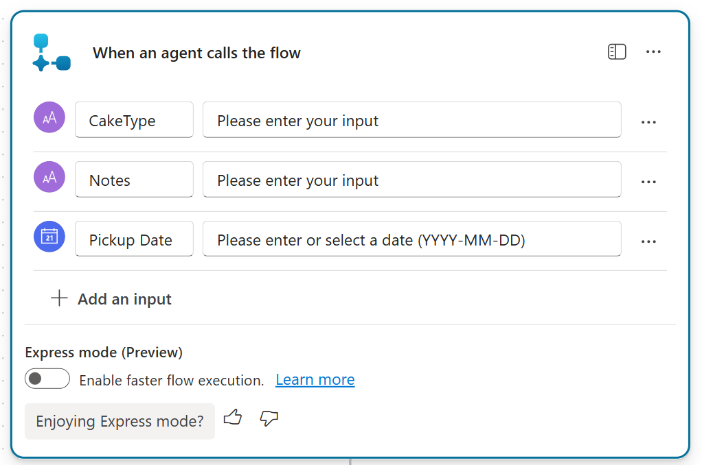
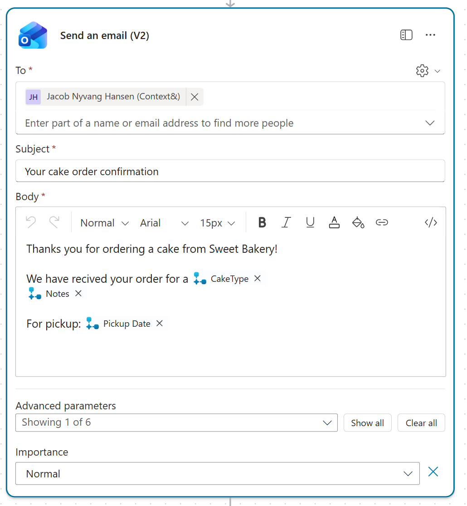
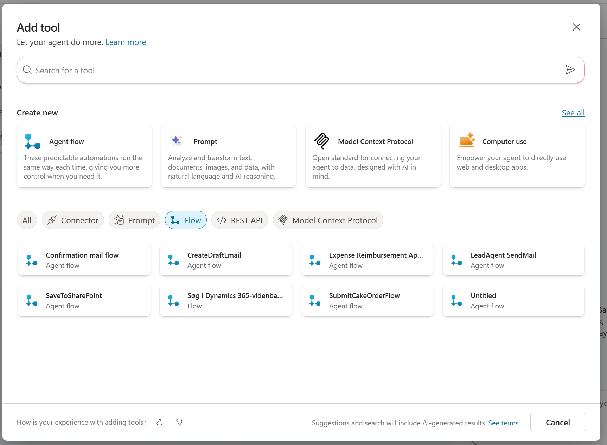
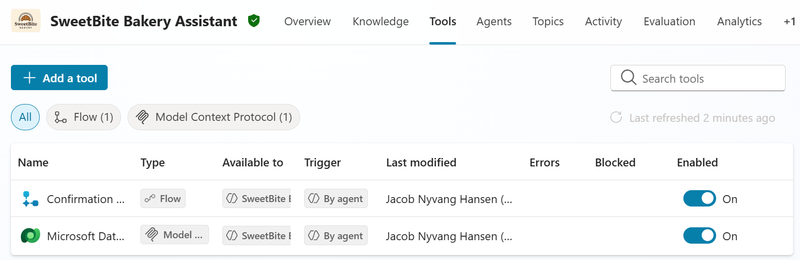
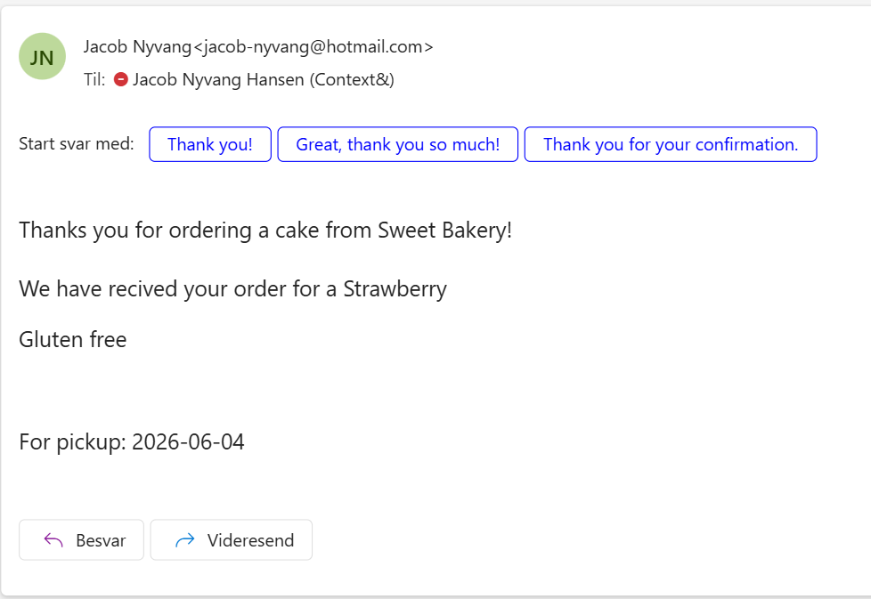
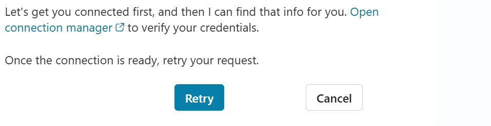
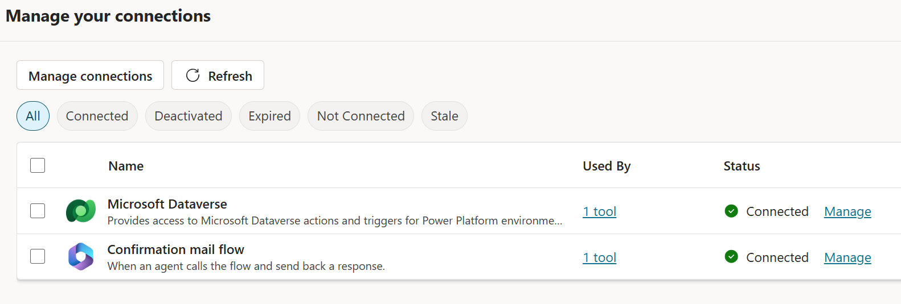

Lab 6 · ~45 minutes
Agent Flows - Sending a Confirmation Email
SweetBite Bakery wants to send customers a confirmation email after a cake order has been created. In this lab, you'll add an Agent Flow and teach the agent when to call it.
🥐 What you'll do
- Create an Agent Flow
- Add flow input variables
- Send a confirmation email
- Update the agent instructions
- Test the flow from the agent conversation
Step 1: Create the Agent Flow
- Go to Tools.
- Select + Add a tool.
- Select New Agent Flow.
Expected result

Step 2: Add flow inputs
- Press the When an agent calls the flow block
- Add the following inputs to the flow:
- CakeType - Chocolate, Vanilla, or Strawberry
- Notes - Special requests or notes
- Pickup Date - The agreed pickup date
Expected result

Step 3: Send the confirmation email
- Under the When an agent calls the flow block, add an Outlook action to send an email Send an email(v2).
- Login with the same account you use for the agent.
- Use your own email as the recipient.
- Use Your cake order confirmation as the subject.
- Use the flow inputs to build the email body.
Expected result

The following "@{triggerBody()?['text']}" syntax is used to reference the flow inputs in the email body. When the flow is called from the agent, these placeholders will be replaced with the actual values provided by the agent.
Step 4: publish the flow and give it a name
- Press the publish button.
- When prompted to go back to the agent or stay in the flow, select Stay in the flow.
- Press the Overview button.
- Under Details press edit
- Give the agent the name Confirmation mail flow
- Press save
- Navigate back to the agent in the left menu
- In your agent go to tools and ensure the flow is listed
- If not, add it manually with + Add a tool and choose Flow then the flow should be listed
Troubleshoot

Expected result

Step 6: Update the instructions
Add the following instructions to tell the agent when it should call the confirmation email flow.
Do not replace the entire instruction, just add the following to the end of the existing instructions.
The agent needs to know when the flow should be used. The flow should only be called if the customer wants a confirmation email and has provided an email address.
Step 7: Test the agent
Create a cake order and check that the agent asks whether the customer wants a confirmation email.
When the agent asks about a confirmation email, answer with:
Expected result (With other data)

Troubleshooting: Connection required
The first time you use the flow from the agent, Copilot Studio may ask you to verify the connection. This usually means the connection exists, but needs to be refreshed or confirmed before the flow can run.
- Click Open connection manager.
- Find the connection used by the flow.
- Check that the status is Connected.
- If needed, click Manage and sign in again.
- Click Refresh.
- Go back to the agent and click Retry.
Connection prompt shown in the agent

Connection manager with connected flow connection

🎯 Checkpoint
- ✅ Created an Agent Flow
- ✅ Added flow inputs
- ✅ Updated the agent instructions
- ✅ Sent a confirmation email from the agent